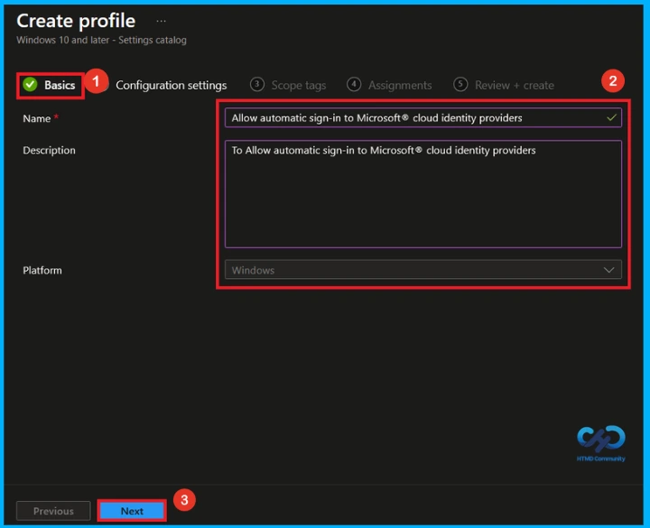
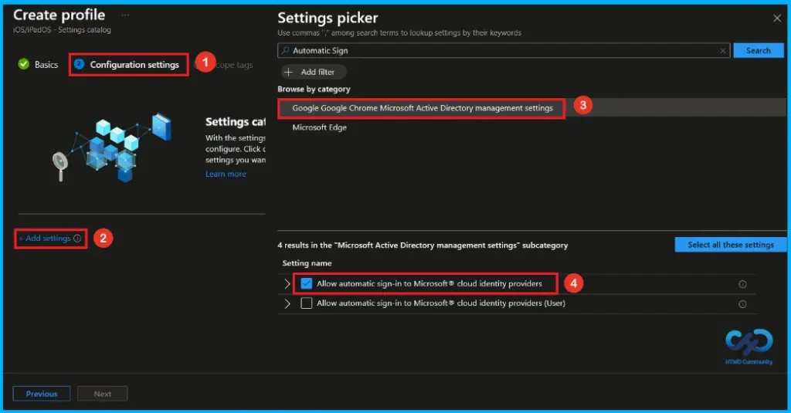
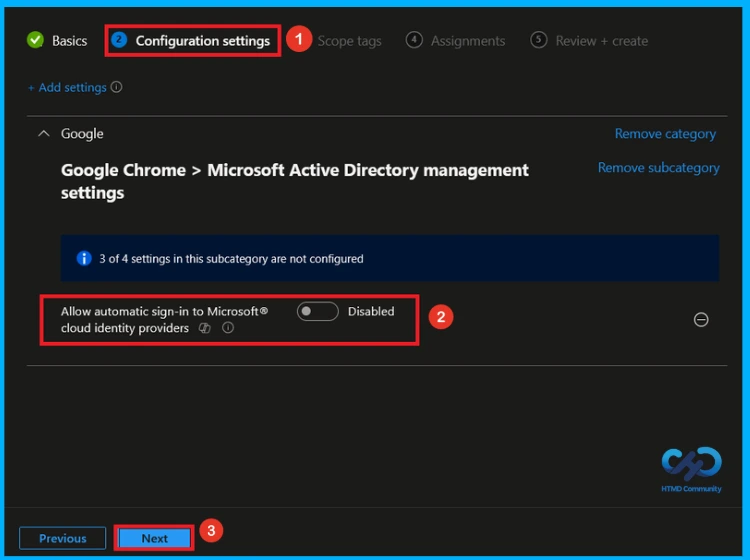
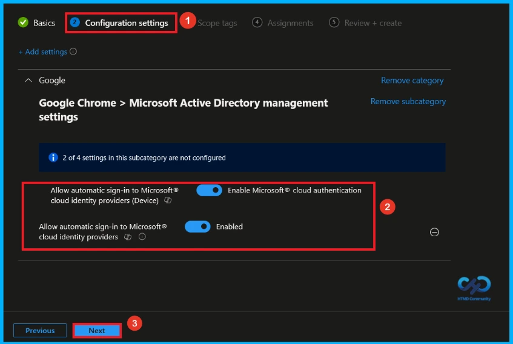
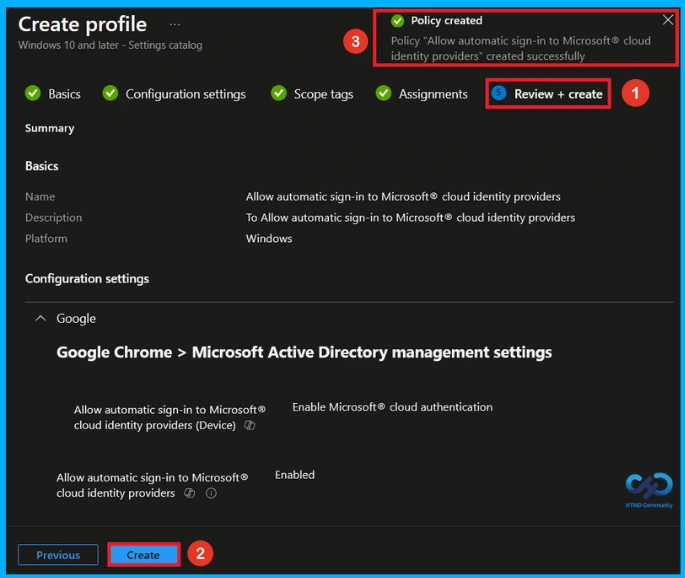
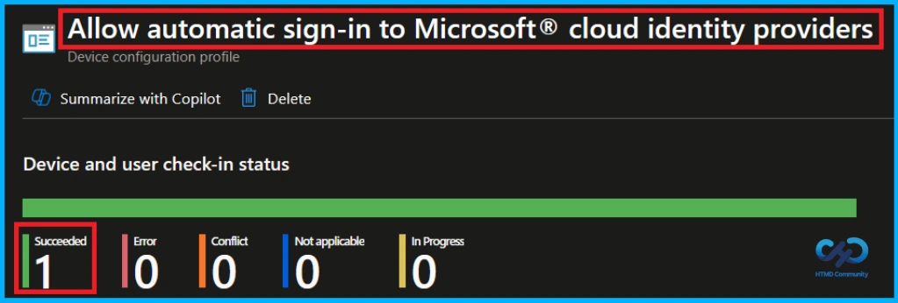
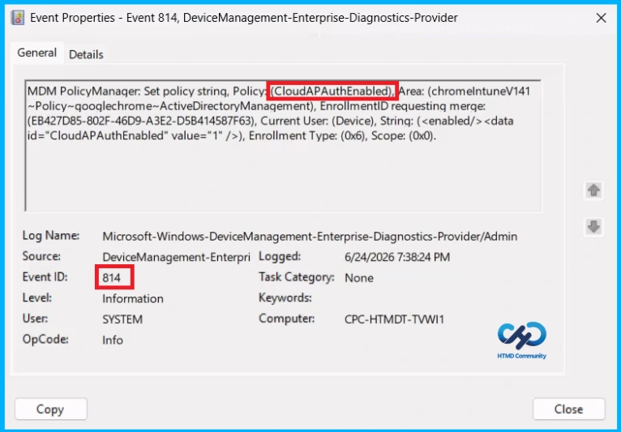
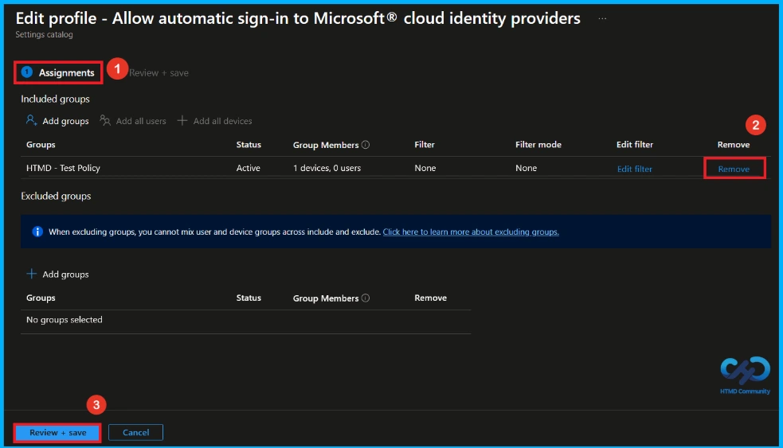
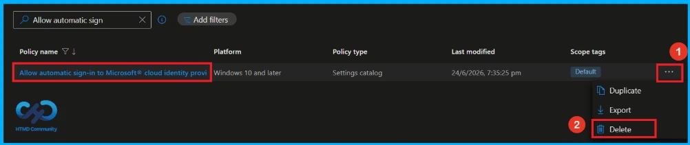

Key Takeaways
- Supports automatic sign-in with Microsoft cloud identity accounts.
- Works for Microsoft accounts and work/school accounts added to Windows.
- Sends device and account information to the identity provider during authentication.
- Not available when browsing in Incognito or Guest mode.
Hey, let’s discuss about Manage Microsoft Cloud Authentication Settings for Google Chrome using Intune. This policy enables users to automatically sign in to websites and services using their Microsoft account or work/school account. When enabled, users do not need to enter their credentials repeatedly, as Windows uses their existing sign-in identity.
Table of Contents
Manage Microsoft Cloud Authentication Settings for Google Chrome using Intune
If the policy is disabled or not configured, automatic sign-in is not allowed. The feature is available on Windows 10 and later versions and does not work in Incognito or Guest mode.
How to Create a Policy in Intune
To create the Automatic sign-in to Microsoft cloud identity providers policy in Microsoft Intune, first sign in to the Microsoft Intune Admin Center. From the left menu, click Devices, then select Configuration. Click Create and choose New Policy.

Create a Profile
After clicking New Policy, a new window will open. Select Windows 10 and later as the Platform and Settings Catalog as the Profile Type. Then, click Create to continue with the policy configuration.

Name and Description
On the Basics tab, you can quickly add the details. Enter a Name (Allow automatic sign-in to Microsoft cloud identity providers) and Description (Allow automatic sign-in to Microsoft cloud identity providers) for the policy. The platform is already set to Windows, so just fill in the information and click Next to continue.

Configure Automatic Sign-in to Microsoft Cloud Identity Providers Policy
On the Configuration settings page, click Add settings to open the Settings picker. In the search box, type Automatic Sign-in, then select Google Google Chrome Microsoft Active Directory management settings from the results. Next, check the box for Allow automatic sign-in to Microsoft cloud identity providers, and close the Settings picker.

Disable Automatic Sign-in to Microsoft Cloud Identity Providers Policy
After closing the Settings Picker, the selected policy will appear on the Configuration Settings page. You will see two choices: Enable or Disable. By default, automatic sign-in to Microsoft cloud identity provider policy is set to Disabled. Click Next to continue.

Enable Automatic Sign-in to Microsoft Cloud Identity Provider Policy
To enable the Automatic sign-in to Microsoft cloud identity providers policy, turn on the Allow automatic sign-in to Microsoft cloud identity providers (Device) setting.Then, enable the Allow automatic sign-in to Microsoft cloud identity providers setting by moving the toggle switch from left to right. After enabling both settings, click Next to continue with the policy creation process.

What is Scope Tag
The next section is the Scope tag and which is not a compulsory step. It helps to assign this policy to a defined group of users or devices. Here, I skip the section(not mandatory) and click on the next button.

Assignment Tab of Automatic Sign-in to Microsoft Cloud Identity Providers policy
The assignments tab is very important step that determines which groups can be selected to assign the policy. Click on the +Add groups option under included groups. Select the group(HTMD – Test Policy) from the list of groups on your tenant. And you can see the selected group on the Assignments tab. Click Next to continue.

Review + Create Tab
Before completing the policy creation, you can review each tab to avoid misconfiguration or policy failure. After verifying all the details, click on the Create Button. After creating the policy, you will get a success message like “Allow automatic sign-in to Microsoft cloud identity providers created successfully”.

Device and User Check-in Status
To view a policy status, go to the Devices > Configuration in the Intune portal, select the policy (Allow automatic sign-in to Microsoft cloud identity providers). Check whether the status has shown succeeded (1). Use manual sync in the Company Portal to speed up the process.

Client Side Verification
To confirm if a policy has been applied, use the Event Viewer on the client device. Go to Applications and Services Logs > Microsoft > Windows > Device Management > Enterprise Diagnostic Provider > Admin. From the list of policies, use the Filter Current Log option and search for Intune event 814.
MDM PolicyManager: Set policy strinq, Policy: (CloudAPAuthEnabled), Area: (chromelntuneV141
~Policy~qooglechrome~ActiveDirectoryManagement), EnrollmentID requesting merge:
(EB427D85-802F-46D9-A3E2-D5B414587F63), Current User: (Device), String: (), Enrollment Type: (0x6), Scope: (0x0).

How to Remove Assigned Group from Automatic Sign-in to Microsoft Cloud Identity Providers Policy
If you want to remove a group from a policy assignment for security updates, open the automatic sign-in to Microsoft cloud identity providers policy from the Configuration tab and click Edit under the Assignment section. Then select Remove to unassign the policy.
For detailed information, you can refer to our previous post – Learn How to Delete or Remove App Assignment from Intune using by Step-by-Step Guide.

How to Delete Aautomatic Sign-in to Microsoft Cloud Identity Providers Policy from Intune
Admins may delete policies in Intune due to different reasons. If you want to quickly delete a automatic sign-in to Microsoft cloud identity providers Policy, Intune helps you to do that. To do this, search for this policy on the Intune admin center. Click on the 3-dot option and then click on the Delete button.
For detailed information, you can refer to our previous post – How to Delete Allow Clipboard History Policy in Intune Step by Step Guide.

Need Further Assistance or Have Technical Questions?
Join the LinkedIn Page and Telegram group to get the latest step-by-step guides and news updates. Join our Meetup Page to participate in User group meetings. Also, Join the WhatsApp Community and WhatsApp Channel to get the latest news on Microsoft Technologies. We are there on Reddit as well.
Author
Anoop C Nair has been Microsoft MVP from 2015 onwards for 10 consecutive years! He is a Workplace Solution Architect with more than 22+ years of experience in Workplace technologies. He is also a Blogger, Speaker, and Local User Group Community leader. His primary focus is on Device Management technologies like SCCM and Intune. He writes about technologies like Intune, SCCM, Windows, Cloud PC, Windows, Entra, Microsoft Security, Career, etc